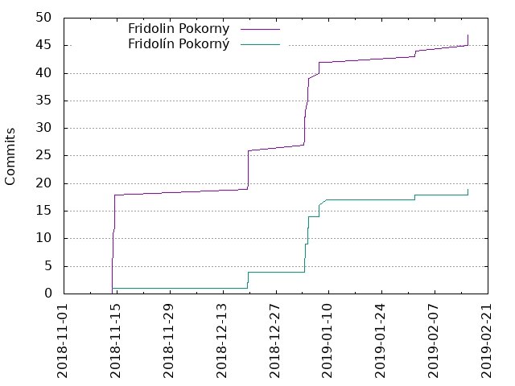
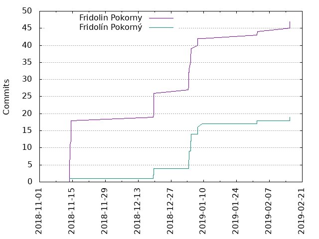

Authors
| Author | Commits (%) | + lines | - lines | First commit | Last commit | Age | Active days | # by commits |
|---|
| Fridolin Pokorny | 47 (71.21%) | 4721 | 1982 | 2018-11-13 | 2019-02-15 | 93 days, 21:13:14 | 8 | 1 |
| Fridolín Pokorný | 19 (28.79%) | 678 | 0 | 2018-11-13 | 2019-02-15 | 93 days, 21:29:50 | 8 | 2 |
 

| Month | Author | Commits (%) | Next top 5 | Number of authors |
|---|
| 2019-02 | Fridolin Pokorny | 5 (71.43% of 7) | Fridolín Pokorný | 2 |
| 2019-01 | Fridolin Pokorny | 16 (55.17% of 29) | Fridolín Pokorný | 2 |
| 2018-12 | Fridolin Pokorny | 8 (72.73% of 11) | Fridolín Pokorný | 2 |
| 2018-11 | Fridolin Pokorny | 18 (94.74% of 19) | Fridolín Pokorný | 2 |
| Year | Author | Commits (%) | Next top 5 | Number of authors |
|---|
| 2019 | Fridolin Pokorny | 21 (58.33% of 36) | Fridolín Pokorný | 2 |
| 2018 | Fridolin Pokorny | 26 (86.67% of 30) | Fridolín Pokorný | 2 |
| Domains | Total (%) |
|---|
| redhat.com | 66 (100.00%) |
|---|